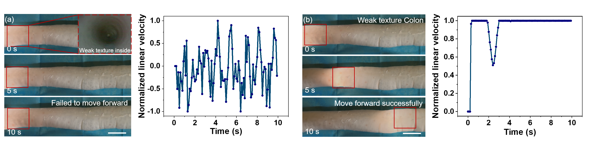

Abstract
Autonomous colonoscopic navigation can reduce operator burden and the risk of loop formation or tissue trauma, but remains challenging due to deformable anatomy, weak-texture and specular endoscopic visuals, and contact-rich viscoelastic interactions. Existing methods either rely on geometry-driven pipelines, which are efficient and interpretable yet brittle due to manually engineered features and switching logic, or adopt learning-based policies, whose inferred depth/geometry can become temporally inconsistent or overly smooth under weak texture and specular highlights while simulation-trained variants (e.g., deep reinforcement learning) may further suffer from a sim-to-real gap. We propose ColoACT, an autonomous navigation system that integrates an RGB-D-E based Action Chunking Transformer policy (ColoACT policy) for a compact self-propelled Bevel-Gear-Based Endoscopic Robot (BGER). The ColoACT policy augments RGB with estimated relative depth and a gradient-based pseudo-elevation map to enhance fold-ridge saliency and other high-frequency geometric cues, and enables smooth continuous control of the BGER by predicting overlapping action chunks and fusing them via temporal ensembling. In different ex-vivo porcine colons (approximately 60 cm), our system achieves success rates of 85.4% and 72.5% in straight and curved segments, respectively, and achieves 70% success in 90-degree turns and 60% in double-bend sequences, with feasibility further demonstrated in challenging triple-bend segments.
Method and Design

Autonomous colon navigation requires a policy that can reason from weak-texture, specular endoscopic images while producing smooth commands under contact-rich tissue interaction. ColoACT treats colon navigation as a multi-cue, chunk-level control problem. It augments RGB observations with estimated relative depth and pseudo-elevation cues, and uses an Action Chunking Transformer policy to predict short future motion chunks. Overlapping predictions are fused through temporal ensembling, enabling stable real-time actuation of a compact self-propelled endoscopic robot.
Multi-Cue Perception and Stability Analysis

Colonoscopic images often contain weak texture, specular highlights, and subtle geometric boundaries, making pure RGB perception unreliable for autonomous navigation. To provide more stable geometric cues, ColoACT augments RGB images with estimated relative depth and a gradient-based pseudo-elevation map. The relative depth map captures coarse lumen geometry, while the pseudo-elevation map emphasizes high-frequency structures such as haustral fold ridges and local surface relief. We further evaluate the temporal stability of these cues under both static and dynamic conditions. The results show that the extracted geometric structures remain spatially localized over time, providing robust navigation-relevant features for closed-loop control.
Result

ColoACT is evaluated on unseen ex-vivo porcine colons to test autonomous navigation under realistic tissue geometry and contact-rich interactions. In straight and curved segments, the full RGB-D-E ACT policy achieves the strongest performance among all tested input configurations, reaching 85.4% and 72.5% success rates, respectively. Compared with a non-temporal RGB-D-E behavior cloning baseline, ColoACT produces substantially smoother motion. The BC baseline often becomes unstable in weak-texture regions, while ColoACT maintains continuous forward navigation by combining action chunking with temporal ensembling.
Navigation in Complex Colon Geometry

To evaluate ColoACT under highly tortuous colonic anatomy, we tested the robot in sharp 90-degree turns, consecutive double-bend paths, and extreme triple-bend segments. These scenarios require the policy to continuously adapt its steering direction while maintaining smooth actuation in contact-rich tissue environments. The normalized angular velocity profiles show a strong correspondence with the physical curvature of the colon. In the 90-degree and double-bend cases, the policy first executes a sharp steering response and then transitions smoothly into sustained turning for the following bend. In the triple-bend case, the policy produces multi-stage polarity reversals, indicating adaptive steering across consecutive bends.
Offline Ablation and Chunk-Horizon Rollout

We analyze how action chunking and temporal ensembling improve control stability. Without temporal ensembling, the raw predicted angular velocity exhibits high-frequency oscillations, which can reduce video stability and increase mechanical stress. By aggregating overlapping predictions over a 16-step sliding window, ColoACT effectively filters stochastic prediction noise and produces smoother steering commands. We also evaluate chunk-level open-loop rollout fidelity in normalized kinematic space. The RGB-D-E policy achieves lower ADE and FDE than RGB and RGB-D variants, indicating that the pseudo-elevation cue helps preserve high-frequency geometric information and better align predicted motion with expert curvature trends.
Comparison

This comparison highlights the benefit of temporal action modeling under weak-texture conditions. The RGB-D-E behavior cloning baseline predicts actions step by step and often produces erratic commands when visual cues are ambiguous. As a result, the robot may fail to move forward reliably. In contrast, ColoACT predicts short future action chunks and fuses overlapping predictions through temporal ensembling. This allows the robot to maintain smooth and continuous forward motion even in feature-poor colonic regions, reducing high-frequency control fluctuations and improving closed-loop stability.
Attention Analysis
We analyze the learned policy behavior from both latent-space and visual-attention perspectives. The CVAE latent space forms a structured manifold aligned with steering direction, suggesting that the policy learns meaningful motion semantics rather than merely memorizing training samples.To interpret visual decision-making, we apply Grad-CAM to the visual backbone. During turning, the strongest response concentrates on the distant navigable lumen, while secondary activation appears along nearby haustral fold ridges. This indicates that ColoACT learns a geometry-aware navigation strategy that balances target-directed motion with boundary awareness.
Overall Effects
ColoACT is further evaluated in highly tortuous ex-vivo colon anatomies, including sharp 90-degree turns, double-bend sequences, and challenging triple-bend segments. These scenarios require the robot to continuously adapt its steering direction while maintaining smooth actuation. The angular velocity profiles show strong correspondence with the physical curvature of the colon. In double-bend and triple-bend sequences, the policy produces smooth polarity changes and sustained steering commands, demonstrating its ability to handle continuous geometric constraints beyond simple straight or single-turn navigation.
BibTeX
@article{YourPaperKey2024,
title={ColoACT: Multi-Cue Action Chunking for Smooth Autonomous Colon Navigation on a Self-Propelled Endoscopic Robot},
author={Jian Hu, Shujing He, Leixin Chang, Zongze Li, Ding Huang, Chaoyang Shi, and Chengzhi Hu},
journal={arxiv},
year={2026},
url={}
}